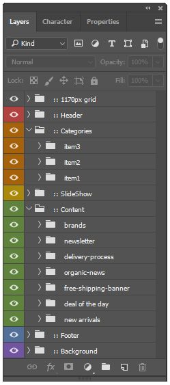

Thank you for purchasing our Template. If you have any questions that are beyond the scope of this help file, please feel free to contact us. Thank you.
“NOGNIC is a creative Multipurpose PSD Template. The Template designed with the most modern, friendly and natural style and it's suitable for Organic Store, Organic Farming, Farm, Organic Food, Organic Food Shop, Dairy Farm, Bakery Shop and many other services. The PSD file is designed on the grid and can be easy to convert it into responsive HTML, Wordpress, Magento, Woocommerce, Opencart, Shopify, Drupal, Joomla, and other systems. The PSD files are perfectly organized, so you can customize everything easily."
15 PSD files included – The design is very elegant and modern, and also very easy to customize.
If you like our template, please rate it 5 stars.
In order to edit the file, you need to have Adobe Photoshop installed on your system, and the fonts mentioned in the credits installed.
As you can see on the right, the layers are well organized and gropued into folders, which make editing very easy.
So, all you have to do, is select the layer from the right, and then edit it with Adobe Photoshop.
That's all! Enjoy.
Many thanks for these great images and icons to:
Note: All images are just used for preview purpose only and NOT included in the final purchase files.
Thank you for purchasing our template. If you have any questions that are beyond the scope of this help file, please feel free to Contact Us . Thanks so much!
Don’t forget to rate the template. Thanks so much!